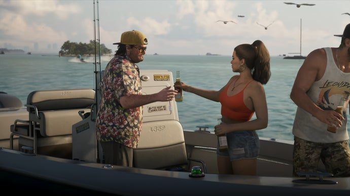
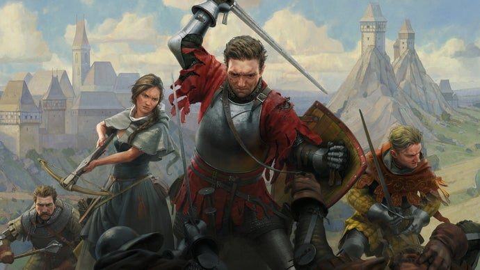
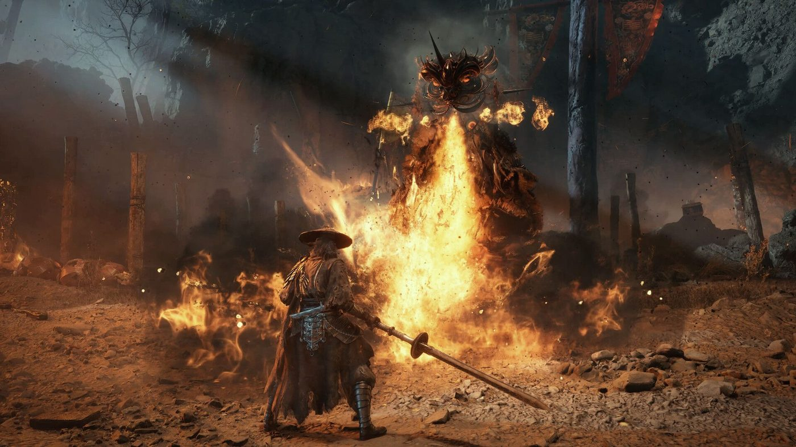
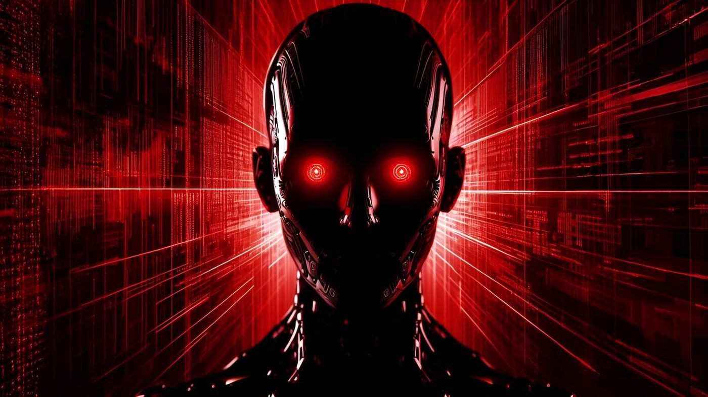
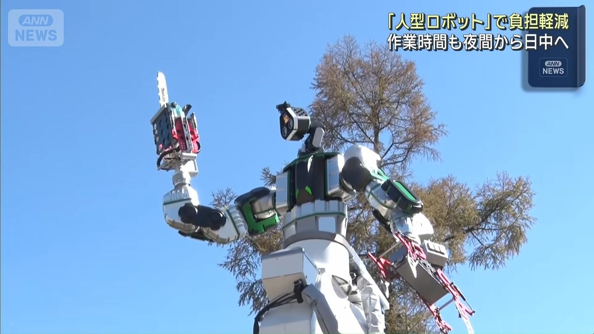
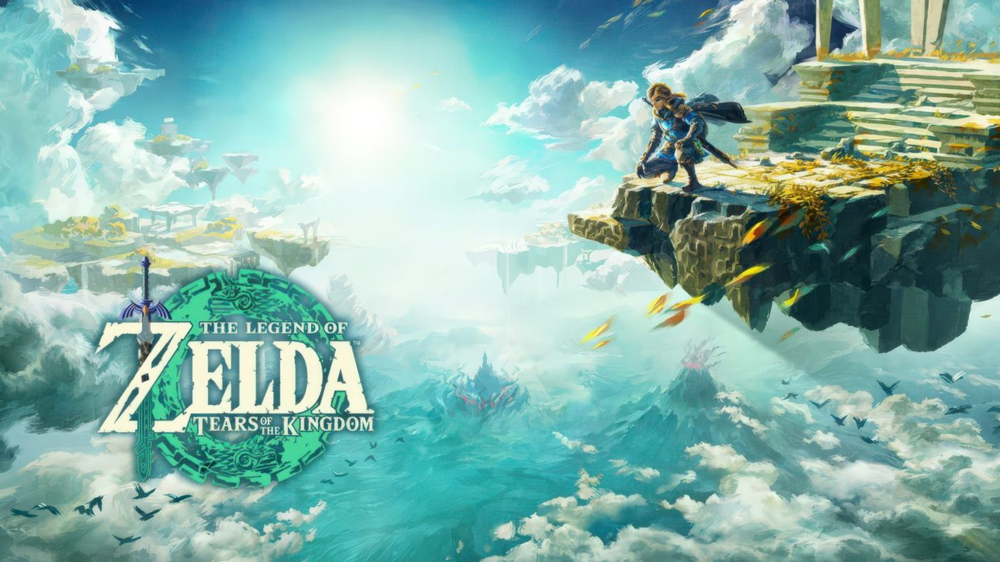
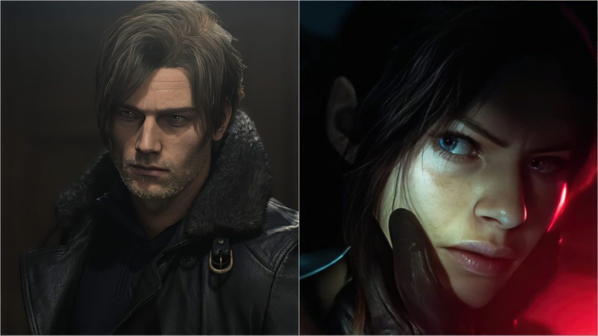
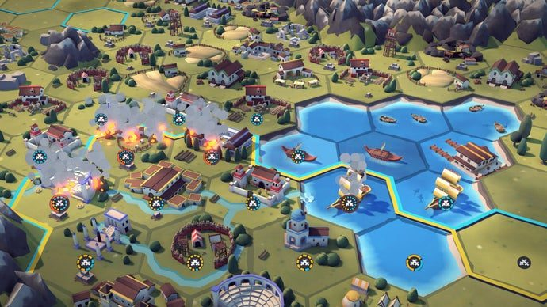
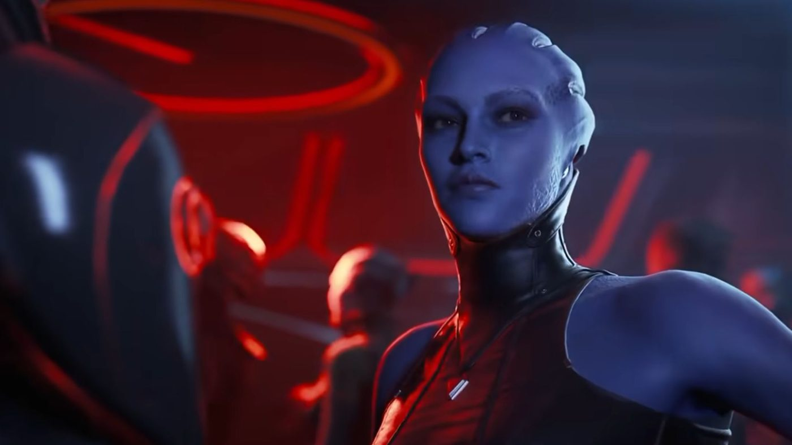

The biggest game in history is being shipped by people who just scheduled a ballot in the middle of shipping it.

Eurogamer / Rockstar Games
A date is locked. Rockstar Games employees in the UK will vote next month on whether to recognise their developer union — and the ballot lands right inside Grand Theft Auto 6's release window. Not before it. Not after it. On top of it.
If it passes it becomes the largest recognised union in the entire UK games industry. Not a small studio, not an indie collective — the people currently assembling the most expensive entertainment product ever made.
There is something deeply, darkly funny about the timing, and also something genuinely good: the workers chose the moment when management has the least room to say no.
Why it matters If the largest studio in the industry unionises during its biggest launch, the rest of the UK sector has a template.
Somewhere a Rockstar HR manager read this headline and aged four years.
There was never really a chance that Grand Theft Auto 6 was going to be a polite download. Now we have the actual figure: 210 gigabytes on PlayStation 5.
For context, that is roughly three Call of Duty installs, or one Baldur's Gate 3 plus the entire life savings of your remaining storage. If you own a launch-model PS5, this single game is a meaningful percentage of your console.
Practical advice, since nobody else will give it: buy the drive before launch, not on the day, because everyone will have the same idea at the same time.
Why it matters Storage is now a genuine purchase decision, not an afterthought.
Twenty years of a shonen titan, wrapped up, with the internet's most reliable deadpan narrating the funeral.
The Bleach anime has concluded after two decades on air. That is a genuinely staggering run — longer than most of us have been watching anime at all.
Charlie's take is the one worth hearing because he is not a reaction merchant about this stuff; he actually tracked it. If you grew up on this era of shonen, this is the video to close the loop with.
Why it matters End of an era for one of the three pillars of 2000s shonen.
Two decades. Some of us started watching this on a school laptop with worse resolution than the manga.
The Kingdom Come: Deliverance developer is still working out how bad it is.

Eurogamer / Warhorse Studios
Warhorse Studios has confirmed a cyberattack, calling it a serious incident, and says it is still determining the full extent of the impact.
No word yet on whether player data, source code or internal systems are involved. The honest read is: wait for the studio's own update rather than believing the first confident-sounding thread on a forum.
Small consolation, but a real one — Warhorse has been unusually direct with its community in the past, so a straight answer is more likely here than from most.
Why it matters Another reminder that mid-size studios are the softest target in the industry.
Change your passwords on the games you love, people. It is boring and it works.
The wuxia action game with the ridiculous combat trailers finally has a clock attached.

PC Gamer
Regional release times are published, which means the pre-load question is now live and the answer is probably yes.
If the trailers are even half honest, this is the closest thing to a modern Ninja Gaiden that anyone has shipped in years — martial arts combat with an actual rhythm to it rather than a dodge-button simulator.
Why it matters A genuine action-game release in a year that has been thin on them.
Every trailer for this game looks like someone's very expensive martial arts demo reel, and I mean that as praise.
Somebody found the evil dial and, predictably, turned it.

Wccftech
A researcher tweaked a single neuron inside Qwen3.8 27B and the model started producing text that reads less like a language model and more like a monologue from a direct-to-DVD horror film.
The interesting part is not the edgy output — anyone can prompt a model into saying something edgy. It is that one neuron carried enough weight to shift the model's whole register. Interpretability people have been saying for years that these things are more concentrated than they look.
Also, 27B running locally is now genuinely a laptop-class model. The gap between 'toy' and 'serious' keeps closing.
Why it matters Single-neuron edits producing dramatic behaviour changes is the strongest argument yet for taking interpretability seriously.
The neuron has a name now and I refuse to learn it.
A humanoid robot with a chainsaw arm, working autonomously, filmed for national television.

Tom's Hardware
A humanoid robot with a chainsaw for an arm was shown on Japanese TV trimming branches that had grown too close to railway lines. It is mounted on a rail truck, it operates autonomously, and it is the single most confident piece of engineering I have read about this week.
This is genuinely a good idea on paper — branch clearance on rail networks is dangerous, repetitive work, exactly the kind of thing you want a machine doing instead of a person on a ladder at six in the morning.
It is also, unavoidably, a chainsaw robot. Some part of my brain simply will not accept the words 'autonomous chainsaw' as reassuring.
Why it matters Autonomous heavy machinery is already in public infrastructure, not a lab demo.
The robot has no face. This is objectively the correct design decision and I would like it noted.
SkyboundTOTK is in beta, with FSR upscaling and frame interpolation already working.

Wccftech
A modder has released an early build of a native Windows version of Tears of the Kingdom — not an emulator wrapper, a native application. It ships with FSR upscaling and experimental frame interpolation, and the developer is upfront that a lot of bugs remain.
The interesting engineering detail is that this is a recompilation project, the same family of technique that got Mario 64 and Majora's Mask running natively with proper widescreen and high frame rates.
Beta means beta. Do not install this expecting a polished experience on day one.
Why it matters Recompilation is quietly becoming the most interesting corner of game preservation.
Nintendo's lawyers are reading this story at this exact moment, professionally.
Capcom's executive producer says the narrative has a conclusion, and it is closer than you think.

Wccftech
Jun Takeuchi told Yahoo Japan that the series' overarching narrative has a definite ending, and that end could arrive within the next decade. Multiple new games are still planned in the meantime.
That is a wild thing to say about a franchise on its ninth mainline entry and its thirtieth anniversary, and it is either a genuine plan or the most elegant way anyone has ever said 'we have not decided yet'.
Either way: a horror series with an actual ending is rare, and if Capcom pulls it off it will be the most interesting thing the studio has done since the RE Engine.
Why it matters A long-running franchise committing to an ending changes how every future entry gets read.
Thirty years of Umbrella and it turns out there was a final page the whole time.
Hex tiles, chaining combos, and a full run in about an hour. Rock Paper Shotgun is extremely into it.

Rock Paper Shotgun
A 4X strategy city-builder built around chaining hexagonal tiles, designed to be finished in roughly an hour. RPS's write-up is partly a review and partly a lament about being an adult with laundry.
The pitch is genuinely appealing: all the satisfying combo-chaining of a big strategy game without the eight-hour commitment that makes you close the tab and feel guilty.
Worth a look if you like the idea of Civilization more than the reality of it on a Tuesday night.
Why it matters Short-form strategy is an underexploited niche and this one has a real hook.
An hour-long 4X game is either genius or a lie, and I would like to find out which.
Discord is creating specially designated channels in large public servers whose messages will show up in search engines from December. RPS immediately asked the only question that matters: what about AI training?
Why it matters Anything you posted in a public server in 2019 is about to become permanently findable.
Go delete the embarrassing stuff now, not in December.
Sam Hulick wants the trailer to represent his actual musical vision. For N7 Day.

PC Gamer
Sam Hulick — who scored the original Mass Effect — is putting together a re-scored version of the leaked Mass Effect 5 trailer for N7 Day. His stated reason is that he wants it to properly represent his musical vision for the cancelled game.
Fan projects that fix a publisher's own marketing are a strange genre, and this is one of the better ones.
Why it matters The composer caring more than the publisher is the whole story of modern Mass Effect.
N7 Day is the closest thing this fanbase has to a religious holiday and honestly, fair.
Waddle World: 'a daily journal disguised as a pet.'
Meta's newest AI product is a virtual pet app that it describes, with unusual honesty, as a daily journal disguised as a pet. You write to it, it responds as a small creature, and Meta gets engagement data.
Why it matters The 'AI companion' category is consolidating fast and Meta wants the default slot.